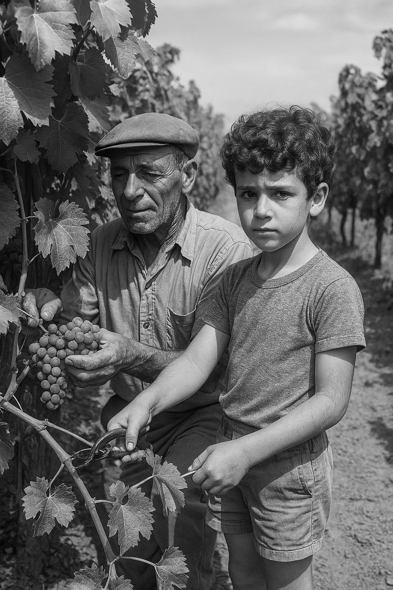

Photos

I am Louis Singer, born in 1947 in Mendoza, Argentina, to a farming family. My father, Juan, was a grape grower for wine in a small family vineyard, and my mother, Rosa, was a seamstress. Our home was filled with joy and Argentine culture, with the scent of empanadas and the sounds of tango in the background. As a child, I loved nature and would spend hours in the fields with my father, learning about grape growing and helping with the harvest.
In 1962, when I was 15, my family decided to immigrate to Israel. The move was not easy — the language was unfamiliar, the landscapes were different, but I saw it as an adventure and a new opportunity. We arrived in the moshav of Alonim in the Jezreel Valley, a place that reminded me somewhat of the fields from my childhood.
At the age of 18, I enlisted as a combat soldier in the Golani Brigade, and during the Six-Day War, I fought in the Sinai Peninsula. I am proud of my military service, and during my time in the army, I made hard work and dedication to the mission central elements of my worldview.
After my military service, I immediately began working in agriculture, and not long after, I started studying agriculture at the University of Tel-Hai, which provided me with additional tools to advance and progress in the field. Over the years, I became the manager of field crops in the moshav. Throughout the years, I blended tradition with innovation, founded new agricultural ventures, and introduced advanced farming techniques.
Today, at the age of 78, I still work in the fields every morning, with the same love for the land and sense of mission. I believe in hard work, consistency, and optimism. I am proud to be a part of the moshav and to pass on my knowledge to the next generation. My life has been a journey full of challenges and successes, and I have always maintained a strong connection to my roots, both in the land and in agriculture.
Scan My QR to visit my Website: ❤️
| Feature | Web1 | Web2 | Web3 |
|---|---|---|---|
| interaction | There is almost no interactivity. The user just reads static content without influencing it. | users can comment, share, like, and create content. | Provides personalized origin information using machine learning and AI |
| Technology | Simple HTML, no JavaScript or advanced CSS. | Using HTML5, CSS3, JavaScript, ajax, and using API's | Based on blockchain and smart contracts |
| Control Over Data | The user has no control over the information. | Users produce content, but the information belongs to the platforms. | Users maintain full control over their information through decentralized technologies. |
The user types “Symptoms of Pneumonia” into a search engine and receives a result of a simple HTML page on a medical website, which contains a list of medical symptoms (e.g.: fever, cough, shortness of breath).
There is no option to comment, ask questions, or get updated information from other users experiences.
The user performs the same search, but arrives at a discussion in a medical Facebook group or a blog post by a former patient, where people share their experiences with pneumonia symptoms – when they appeared, what were the exceptions, and how they coped.
The user can comment, ask questions, and have a conversation with others.
However, the information may not be accurate or medically verified.
The user performs the search and receives information from a decentralized medical platform, where patients and professionals share symptoms that have been verified by the system.
Each report is recorded on the blockchain – users can see which symptoms have appeared in people of a similar age, similar geographical location, or with similar underlying diseases, without compromising their privacy.
The information is verified, secure, transparent and anonymous.